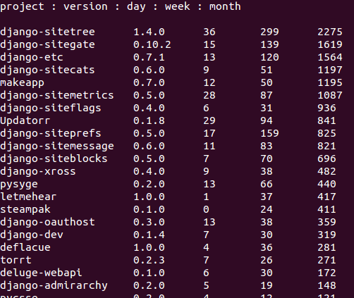

Игорь Стариков / idle sign
Видео выступления
Несколько десятков проектов с открытым кодом — Python, JavaScript, PHP, Delphi.Вежливость — уважительность, корректность, соблюдение приличий.
Вежа — знаток, опытный, знающий.
Документация — основное средство начального ознакомления с возможностями продукта, влияющее на формирование отношения к нему.
Сжатое описание продукта, его основные характеристики.
Позволяет пользователю получить представление о необходимости обновления.
Информация о возможностях API, примеры использования.
Только, если требуются для улучшения понимания происходящего.
Не являются гарантией правильного функционирования, но незаменимы при реорганизации кода.
Инструменты для быстрого развёртывания структуры проекта.
Оригинальная статья «Азбука вежливости разработчика» — http://bit.ly/pypolite
Эти слайды можно найти тут — http://bit.ly/ist_001